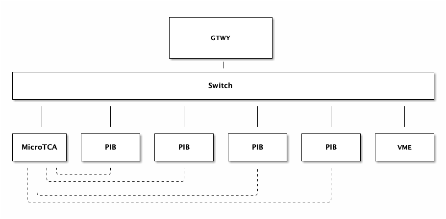

---
redirect_from:
  - "/system-desc/system-desc"
title: |-
  Description of Extinction Monitor System
pagenum: 2
prev_page:
  url: /intro/intro.html
next_page:
  url: /devTCA2464A/devTCA2464A.html
suffix: .md
search: network through extmon channels hardware detailed interface pibs pib configuration system electronics fixme ref channel single pixel sensor monitored data daq microtca board docdb via require controlled controllers bbb standard switch pmts simple device subnetwork lines connections description overview summarize individual corresponds fe ib chip paired silicon powered boards acquisition pixels done custom printed circuit consisting power distribution monitoring communication control six beaglebone black arm based computer documentation associated components found mue fnal gov cgi bin private retrievefile docid filename muepibv docxversion details entire consist total four its connect ethernet allowing multiple remotely separately event trigger consists several plastic scintillators

comment: "***PROGRAMMATICALLY GENERATED, DO NOT EDIT. SEE ORIGINAL FILES IN /content***"
---

    <main class="jupyter-page">
    <div id="page-info"><div id="page-title">Description of Extinction Monitor System</div>
</div>
    <div class="jb_cell">

<div class="cell border-box-sizing text_cell rendered"><div class="inner_cell">
<div class="text_cell_render border-box-sizing rendered_html">
<h1 id="System-Description-">System Description <a class="anchor-link" href="#System-Description-"> </a></h1><h2 id="Overview">Overview<a class="anchor-link" href="#Overview"> </a></h2><p>The ExtMon hardware and electronics are detailed in [FIXME:ref]. To
summarize, an individual channel corresponds to a single FE-I4b pixel
chip paired with a silicon sensor. Channels are powered and monitored
through Pixel Interface Boards (PIBs) and the data acquisition (DAQ)
from the pixels is done through MicroTCA electronics. A PIB is a custom
printed circuit board consisting of power distribution and monitoring
hardware for communication and control for up to six channels through a
BeagleBone Black single-board ARM-based computer. More detailed
documentation of the PIB and associated components can be found in
<a href="https://mu2e-docdb.fnal.gov/cgi-bin/private/RetrieveFile?docid=12671&amp;filename=Mu2e_PIB_v1.52.docx&amp;version=11">docdb-12671</a>.
The details of the DAQ via MicroTCA are detailed in [FIXME:ref].</p>
<p>The entire ExtMon will consist of 20 channels, which will require a
total of four PIBs. Each channel is controlled through its PIB via
hardware controllers on the BBB. The BBB has a network interface that
can connect to a standard ethernet switch, allowing for multiple PIBs to
be controlled and monitored remotely. Separately from channels, the
event trigger for the ExtMon system consists of several plastic
scintillators with photomultiplier tubes (PMTs). These PMTs require high
voltage, which is provided by a VME crate with a network interface
through the Simple Network Management Protocol (SNMP).</p>
<h2 id="Network-Configuration">Network Configuration<a class="anchor-link" href="#Network-Configuration"> </a></h2><p>All physical device and sensor controlls are accessible through standard
networking protocols. This allows for a simple subnetwork structure with
all devices connected to a switch, with one machine dedicated as the
subnetwork gateway (GTWY). A diagram of this configuration is shown in
Figure 1.</p>
<p></p>

</div>
</div>
</div>
</div>

 


    </main>
    